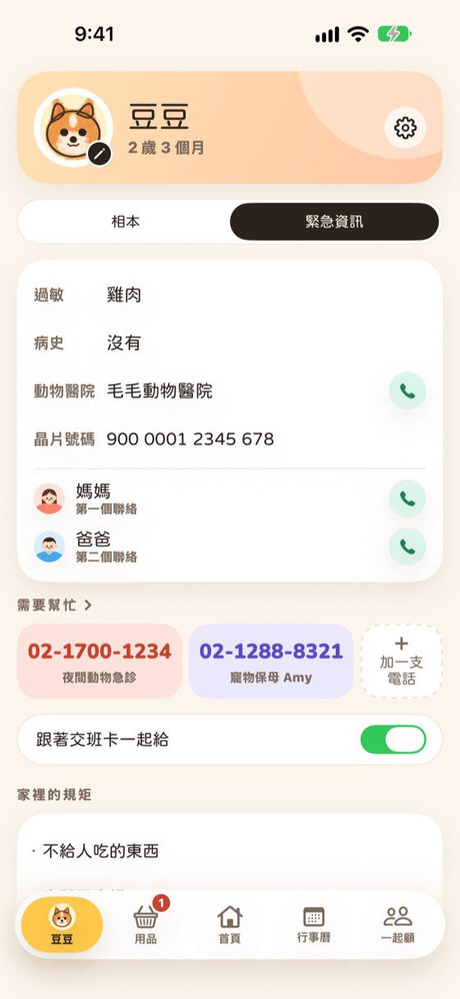
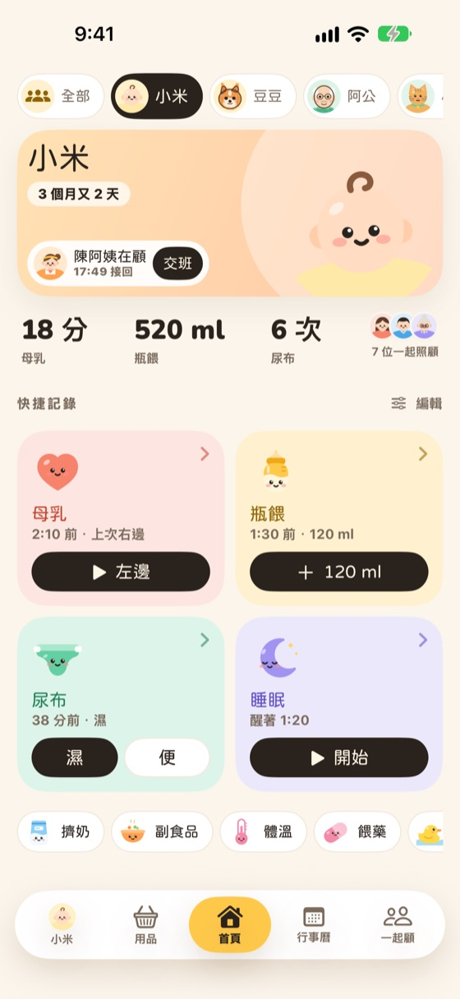
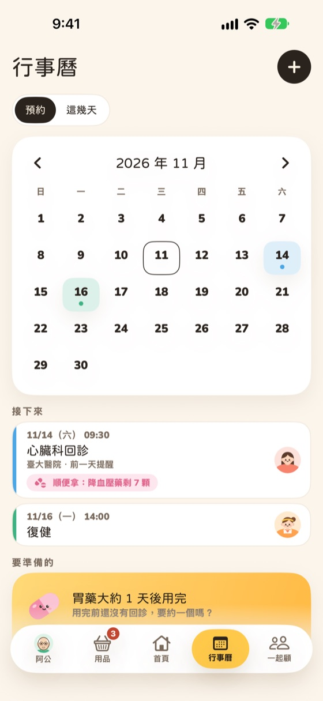
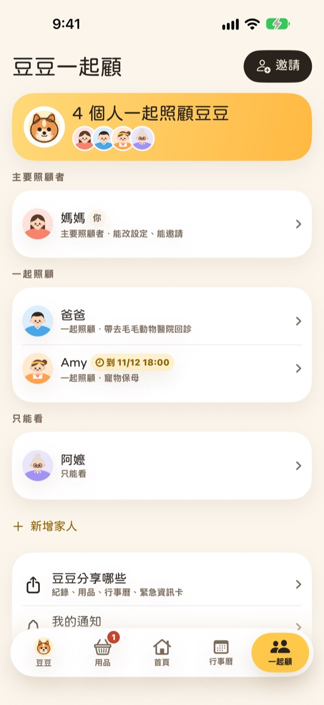

顧伴
顧伴一按就記
要記什麼自己定，餵奶、散步、吃藥、量體溫都行，首頁的大卡一按就記。需要計時的也能計時，計時中也能改開始時間。



一按就記，換手時一張卡，一起照顧的人看到的是同一本日記。寶寶、狗貓和長輩之外，魚和水族、植物、爬蟲、鳥、昆蟲、兔子倉鼠、馬羊也能記，選了就有常記的事先勾好。
要記什麼自己定，餵奶、散步、吃藥、量體溫都行，首頁的大卡一按就記。需要計時的也能計時，計時中也能改開始時間。
這段時間做了哪些事，加上一句話和照片，傳到 LINE。收到的人不用裝 App。
7 天或 30 天的時間軸，每天一欄，一眼看懂，點一天看清單。
過敏、病史、常去的醫院、先打給誰，交班時一起帶上。需要幫忙的電話由你自己加，第一次請人幫忙也有清單。
回診、打針、美容都記在一起，誰帶去、前一天提醒。尿布、飼料、藥快用完時，提醒負責買的人。
依月份分段，貼紙、膠帶、印章和手寫字都能加，一個月或整本可以做成翻頁影片分享。
自己照顧 2 位都免費，還能邀 1 個只能看的人。要更多位、和更多人一起記，再升級 Pro，一份大家一起用，收到邀請的人不用另外付費。

在「家人」按「邀請」，選對方是主要照顧者、一起照顧或只能看，也可以設到什麼時候，對方用相機掃 QR code。兩邊顯示同一組 4 位數，確認後兩支手機的紀錄就合在一起。免費可以邀 1 個只能看的人，其他是 Pro，收到邀請的人不用另外付費。
不用。交班卡是一張圖片，用 LINE、簡訊或任何 App 傳出去，收到的人直接看。
剛記好時可以按復原收回。之後在「這幾天」點那一天，點一筆可以改，長按可以刪除，刪掉後也能復原。
計時中和結束時都能改開始和結束的時間。計時跑了很久的話，打開 App 時會問你還在不在計時。
不會。本 App 只記錄和分享，不判讀、不和別人比較。身體的狀況請問醫師或獸醫。
本 App 在很多國家上架，各地的電話都不一樣，所以由你自己加常用的醫院、獸醫、藥局、救護車，可以排順序，前三支會出現在緊急資訊卡上。
紀錄、照片和影片只在這支手機上，沒有雲端。換手機時，在舊手機打開「設定」>「換手機和備份」>「換到新 iPhone」，新手機掃 QR code 就搬過去。舊手機不在身邊的話，先做一個有密碼的備份檔，在新手機還原。換手機和備份都免費。
如果開了「也放到 iPhone 行事曆」，先在 App 的設定裡關掉，行事曆裡的預約才會一起收掉，不然會留在行事曆 App 裡（這些預約沒有設鬧鈴，不會響）。通知、即時動態和小工具會跟著 App 一起移除。紀錄只在這支手機上，刪掉就沒有了，需要的話先做備份檔或匯出 CSV。
不會。刪掉 App 不會取消訂閱，要到 iPhone「設定」>（你的名字）>「訂閱項目」取消。
取消：iPhone「設定」>（你的名字）>「訂閱項目」，或在 App 的 Pro 頁打開訂閱管理。Pro 會用到這一期結束，紀錄都會留著。
退款由 Apple 處理，可以到 reportaproblem.apple.com 申請。
恢復：換手機或重新安裝後，在 Pro 頁按「恢復購買」。
通常幾天內回覆。請附上 iPhone 型號和 iOS 版本，不需要附上你們的紀錄。
本 App 用來記錄和分享照顧的事，不是醫療器材，不提供診斷或治療。遇到緊急狀況，請立即撥打當地的急救電話。